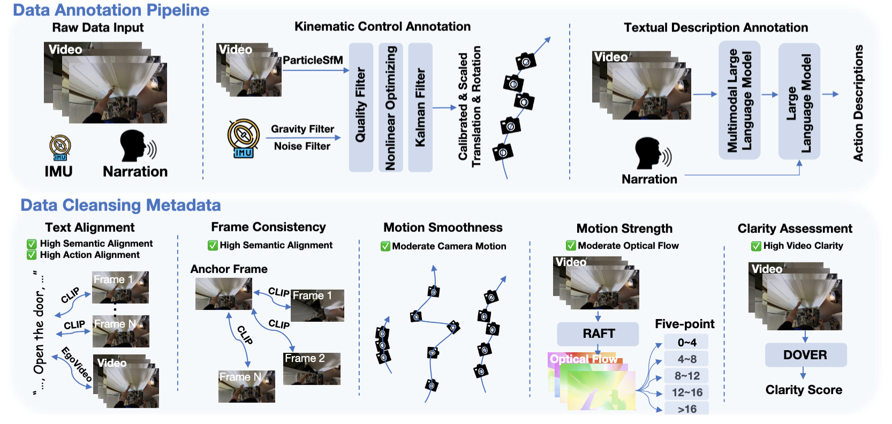
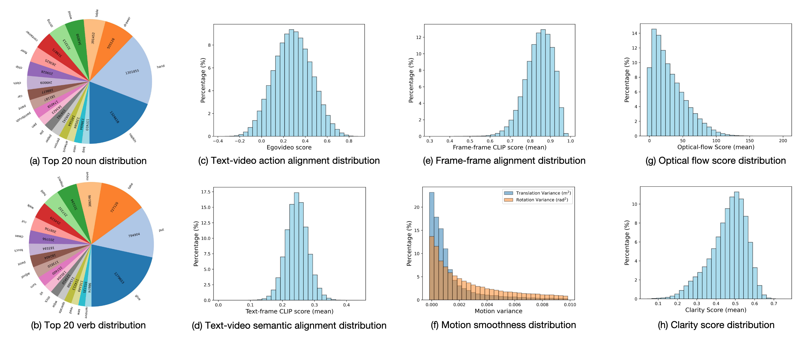
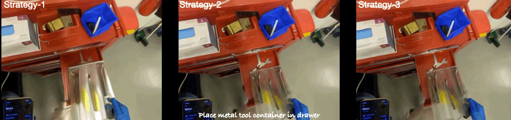
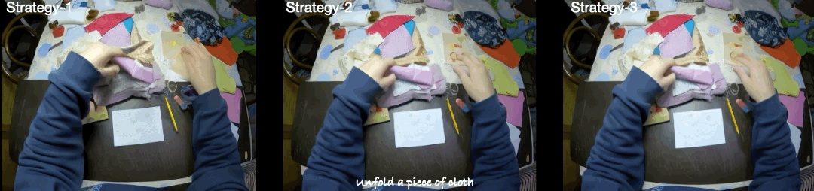

Text Action Driven Video Generation


In order to simulate egocentric videos from actions, we construct detailed and accurate action annotations for each video segment, encompassing low-level kinematic control (e.g., ego-view translation and rotation), as well as high- level textual descriptions. The annotation pipeline is shown in the upper part. Besides, Considering the data quality significantly influences the effectiveness of training generative models. EgoVid-5M presents a specialized cleaning pipeline specifically designed for egocentric scenarios. The pipeline is illustrated in the lower part.
Below is the data annotation distribution of EgoVid-5M. (a) and (b) describe the quantities of the top 20 verbs and nouns. (c) Text-video action alignment is assessed using the EgoVideo score. (d) and (e) measure the semantic similarity between text and frames and between frames and the first frame using the average CLIP score. (f) Motion smoothness is quantified by the variance of translation and rotation. (g) Motion strength is represented by the average global optical flow. (h) Video clarity is determined by the DOVER score.
The video visualization comparison across different data cleaning strategies reveals distinct outcomes Videos generated by strategy-1 fail to capture local motion and tend to be stationary. In contrast, videos produced by strategy-2 exhibit excessive motion, compromising semantic coherence. Meanwhile, videos generated by strategy-3 effectively model intricate hand movements, striking a balance between motion strength and semantic fidelity.
 
If you use our work in your research, please cite:
@article{wang2024egovid,
title={EgoVid-5M: A Large-Scale Video-Action Dataset for Egocentric Video Generation},
author={Wang, Xiaofeng and Zhao, Kang and Liu, Feng and Wang, Jiayu, and Zhao, Guosheng, and Bao, Xiaoyi, and Zhu, Zheng and Zhang, Yingya and Wang, Xingang},
journal={arXiv preprint arXiv:2411.08380},
year={2024}
}